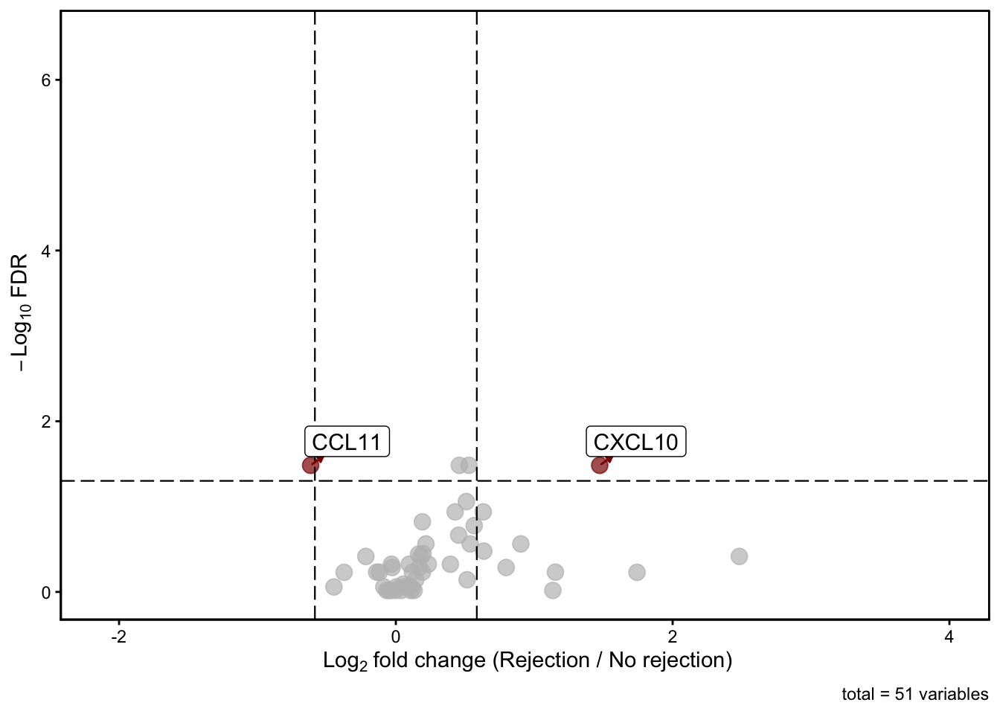
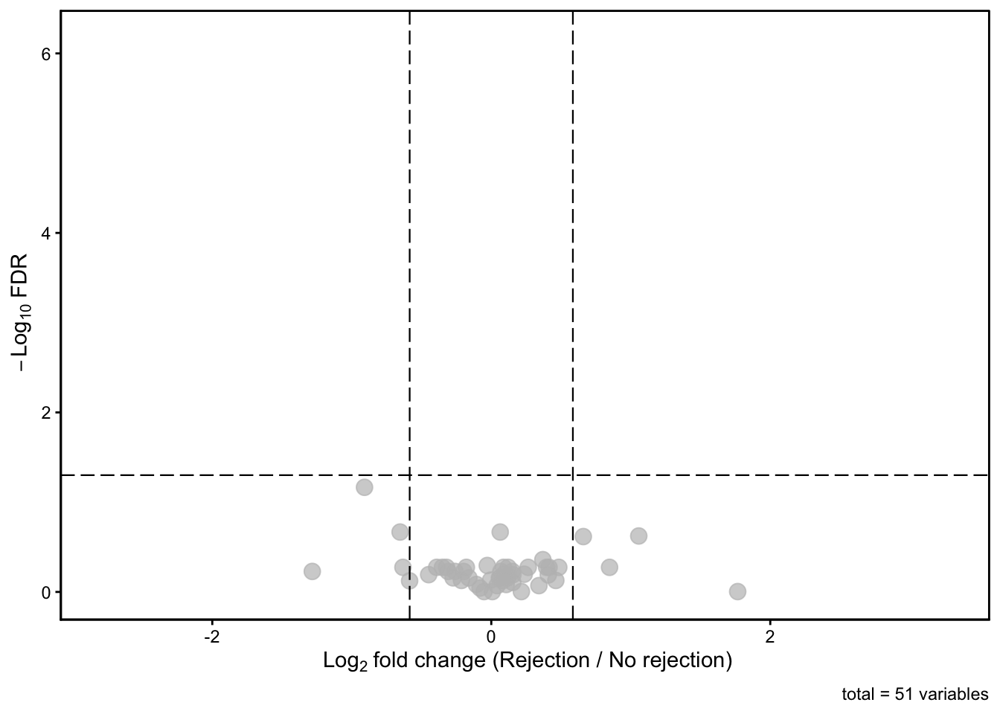
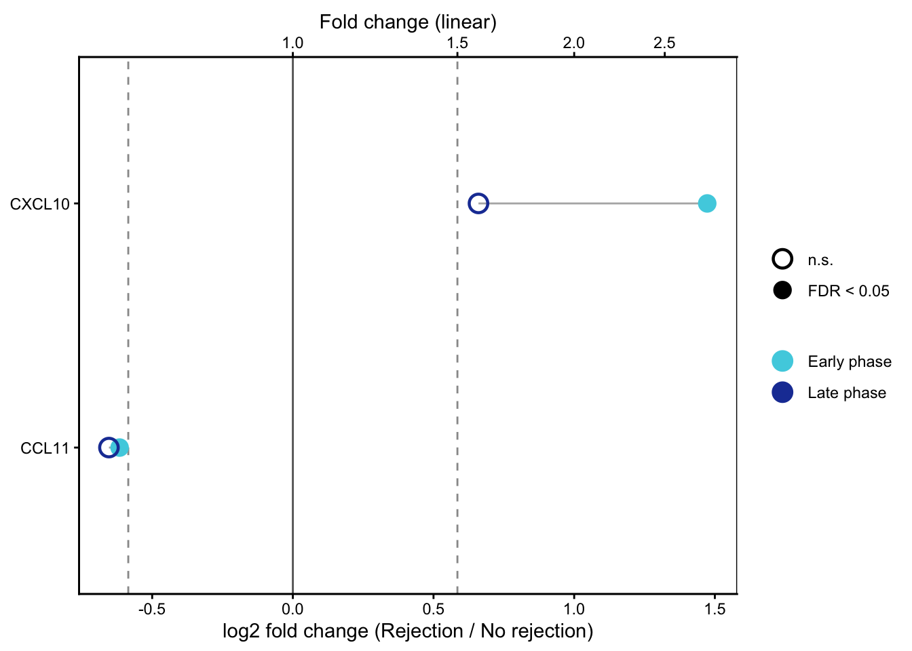
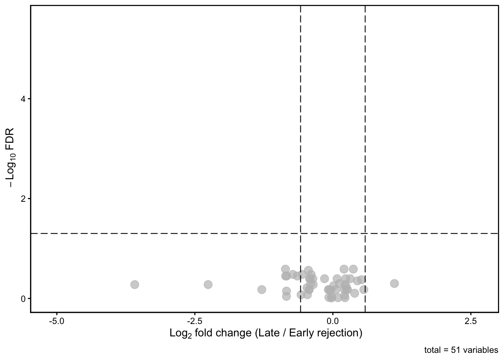
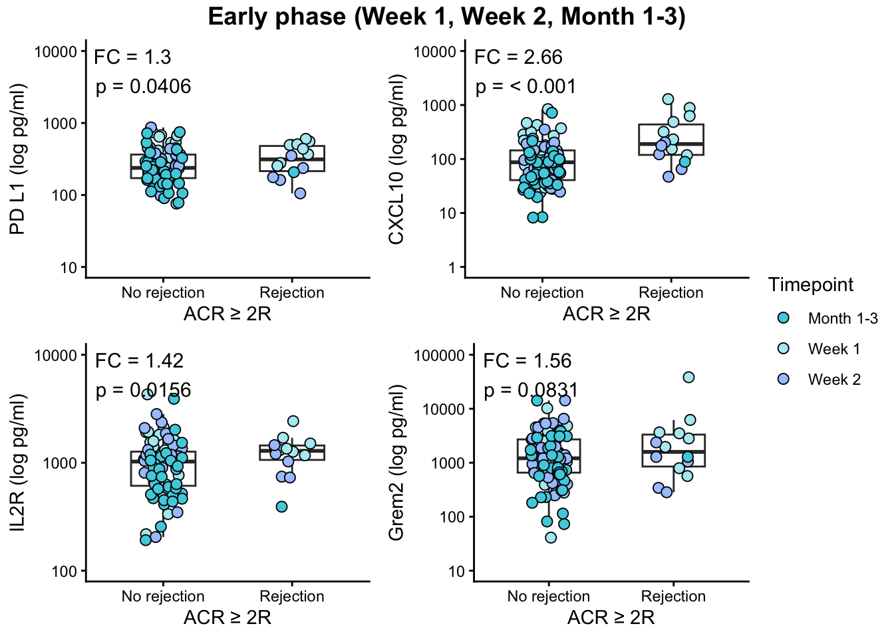
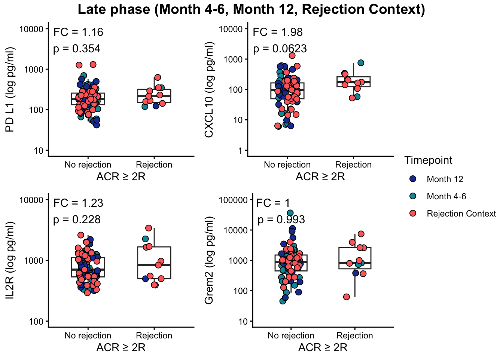
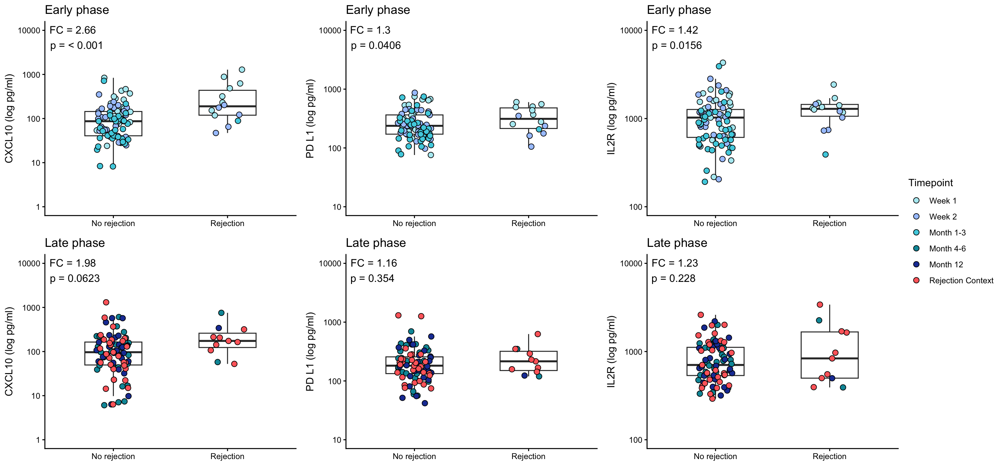
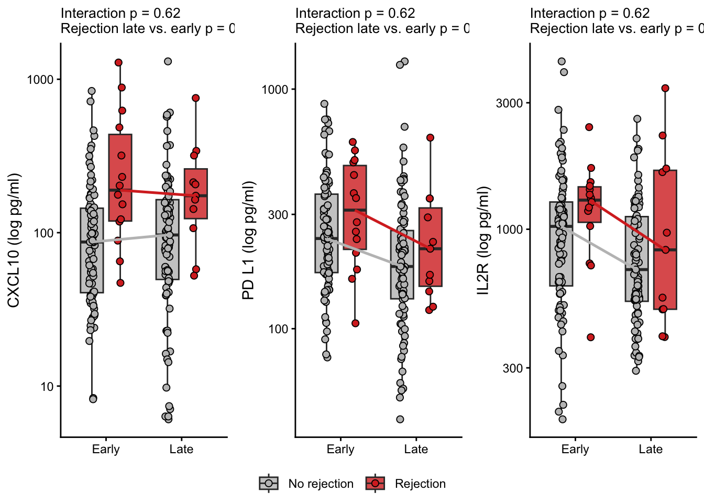

Last updated: 2026-10-25
Checks: 6 1
Knit directory: Luminex_CarTrans/
This reproducible R Markdown analysis was created with workflowr (version 1.7.2). The Checks tab describes the reproducibility checks that were applied when the results were created. The Past versions tab lists the development history.
The R Markdown file has unstaged changes. To know which version of
the R Markdown file created these results, you’ll want to first commit
it to the Git repo. If you’re still working on the analysis, you can
ignore this warning. When you’re finished, you can run
wflow_publish to commit the R Markdown file and build the
HTML.
Great job! The global environment was empty. Objects defined in the global environment can affect the analysis in your R Markdown file in unknown ways. For reproduciblity it’s best to always run the code in an empty environment.
The command set.seed(20261015) was run prior to running
the code in the R Markdown file. Setting a seed ensures that any results
that rely on randomness, e.g. subsampling or permutations, are
reproducible.
Great job! Recording the operating system, R version, and package versions is critical for reproducibility.
Nice! There were no cached chunks for this analysis, so you can be confident that you successfully produced the results during this run.
Great job! Using relative paths to the files within your workflowr project makes it easier to run your code on other machines.
Great! You are using Git for version control. Tracking code development and connecting the code version to the results is critical for reproducibility.
The results in this page were generated with repository version 91d5062. See the Past versions tab to see a history of the changes made to the R Markdown and HTML files.
Note that you need to be careful to ensure that all relevant files for
the analysis have been committed to Git prior to generating the results
(you can use wflow_publish or
wflow_git_commit). workflowr only checks the R Markdown
file, but you know if there are other scripts or data files that it
depends on. Below is the status of the Git repository when the results
were generated:
Ignored files:
Ignored: .DS_Store
Ignored: .Rhistory
Ignored: .Rproj.user/
Ignored: Quality-Control_files/
Ignored: analysis/.DS_Store
Ignored: data/
Ignored: html/
Unstaged changes:
Modified: analysis/Early_late_rejection.Rmd
Note that any generated files, e.g. HTML, png, CSS, etc., are not included in this status report because it is ok for generated content to have uncommitted changes.
These are the previous versions of the repository in which changes were
made to the R Markdown (analysis/Early_late_rejection.Rmd)
and HTML (docs/Early_late_rejection.html) files. If you’ve
configured a remote Git repository (see ?wflow_git_remote),
click on the hyperlinks in the table below to view the files as they
were in that past version.
| File | Version | Author | Date | Message |
|---|---|---|---|---|
| Rmd | 58d6ac5 | IsabellaH1993 | 2026-10-24 | 24.10.2026_18:16 |
| html | 58d6ac5 | IsabellaH1993 | 2026-10-24 | 24.10.2026_18:16 |
| Rmd | 0f20a45 | IsabellaH1993 | 2026-10-24 | 24.10.2026_13:00 |
rm(list = ls())# Import Luminex Data
table_lum_CarTrans_V1<- openxlsx::read.xlsx(file.path(basedir, "data", "Lum_CarTrans_V1_all.xlsx"))
table_lum_CarTrans_V2 <- openxlsx::read.xlsx(file.path(basedir, "data", "Lum_CarTrans_V2_all.xlsx"))
table_lum_CarTrans_V3 <- openxlsx::read.xlsx(file.path(basedir, "data", "Lum_CarTrans_V3_all.xlsx"))
table_lum_CarTrans_V4 <- openxlsx::read.xlsx(file.path(basedir,"data", "Lum_CarTrans_V4_all.xlsx"))
table_lum_CarTrans_V5 <- openxlsx::read.xlsx(file.path(basedir,"data", "Lum_CarTrans_V5_all.xlsx"))
table_lum_CarTrans_VX <- openxlsx::read.xlsx(file.path(basedir,"data", "Lum_CarTrans_VX_all.xlsx"))
# Delete ATG_EMB column
table_lum_CarTrans_V1 <- table_lum_CarTrans_V1 %>% select(-ATG_EMB1_3)
table_lum_CarTrans_V2 <- table_lum_CarTrans_V2 %>% select(-ATG_EMB1_3)
table_lum_CarTrans_V3 <- table_lum_CarTrans_V3 %>% select(-ATG_EMB1_3)
# Combine Tables
table_lum_CarTrans_overall <- rbind(table_lum_CarTrans_V1, table_lum_CarTrans_V2, table_lum_CarTrans_V3, table_lum_CarTrans_V4, table_lum_CarTrans_V5, table_lum_CarTrans_VX)%>%
mutate(across(-c(Study_ID, Visit, ISHLT_1990, ISHLT_2004, Class_Sup))) %>%
filter(!Study_ID %in% c("CarTrans-Long-38", "CarTrans-Long-39", "CarTrans-Long-40", "CarTrans-Long-41", "CarTrans-Long-42", "CarTrans-Long-43", "CarTrans-Long-44", "CarTrans-Long-45", "CarTrans-Long-46", "CarTrans-Long-47", "CarTrans-Long-48", "CarTrans-Long-49", "CarTrans-Long-50", "CarTrans-Long-51", "CarTrans-Healthy-29", "CarTrans-Healthy-30", "CarTrans-Healthy-31", "CarTrans-Healthy-32", "CarTrans-Healthy-33", "CarTrans-Healthy-34", "CarTrans-Healthy-35", "CarTrans-Healthy-36", "CarTrans-Healthy-37", "CarTrans-Healthy-38", "CarTrans-Healthy-39", "CarTrans-Healthy-40", "CarTrans-Healthy-41", "CarTrans-Healthy-42", "CarTrans-Healthy-43", "CarTrans-Healthy-44", "CarTrans-Healthy-45", "CarTrans-Healthy-46", "CarTrans-Healthy-47", "CarTrans-Healthy-48","CarTrans-Healthy-49", "CarTrans-Healthy-50")) table_lum_CarTrans_overall <- table_lum_CarTrans_overall %>%
select(-Class_Sup, -Transplantation_risk)# Define Rejection as ACR >=2R
table_lum_CarTrans_overall <- table_lum_CarTrans_overall %>%
mutate(Rejection = case_when(
ISHLT_2004 %in% c("ACR 2R", "ACR 3R") ~ "Rejection",
ISHLT_2004 %in% c("ACR 0", "ACR 1R") ~ "No rejection"
),
Rejection = factor(Rejection, levels = c("No rejection", "Rejection")))
# Define analyte columns
analytes <- setdiff(names(table_lum_CarTrans_overall),
c("Study_ID", "Visit", "Sample_ID", "Timepoint", "ISHLT_2004", "ISHLT_1990", "Rejection"))
table(table_lum_CarTrans_overall$Timepoint, table_lum_CarTrans_overall$Rejection)
No rejection Rejection
Month 1-3 33 1
Month 12 28 1
Month 4-6 30 2
Rejection Context 29 8
Week 1 26 8
Week 2 28 5volcano_rejection <- function(timepoints) {
# Filter phase and keep only graded samples
data_phase <- table_lum_CarTrans_overall %>%
filter(Timepoint %in% timepoints, !is.na(Rejection))
# Wilcoxon test per parameter: Rejection vs. No rejection
parameters <- names(dplyr::select(data_phase, CCL11:Grem2))
stat <- NULL
for (i in parameters) {
formula <- as.formula(paste(i, "Rejection", sep = "~"))
stat <- bind_rows(stat,
data_phase %>%
wilcox_test(formula = formula) %>%
rename(Parameter = .y.))
}
# FDR across all parameters
stat <- stat %>%
mutate(FDR = p.adjust(p, method = "BH")) %>%
add_significance(p.col = "FDR")
# Mean per group and log2 FC (Rejection / No rejection)
volcano_table <- data_phase %>%
group_by(Rejection) %>%
summarise(across(CCL11:Grem2, ~ mean(.x, na.rm = TRUE))) %>%
pivot_longer(-Rejection, names_to = "Parameter", values_to = "Mean") %>%
pivot_wider(names_from = Rejection, values_from = Mean) %>%
mutate(log2_fc = log2(Rejection / `No rejection`)) %>%
left_join(stat %>% dplyr::select(Parameter, n1, n2, p, FDR), by = "Parameter") %>%
mutate(label_para = ifelse(FDR < 0.05 & abs(log2_fc) > log2(1.), Parameter, ""))
# Volcano plot
plot <- EnhancedVolcano(volcano_table,
lab = volcano_table$label_para,
x = "log2_fc", y = "FDR",
FCcutoff = log2(1.5), pCutoff = 0.05,
pointSize = 3.5, labSize = 4, colAlpha = 0.7,
boxedLabels = TRUE, col = c("grey", "grey", "grey", "darkred"),
xlab = bquote(~Log[2]~ "fold change (Rejection / No rejection)"),
ylab = bquote(~-Log[10]~ "FDR"),
title = NULL, subtitle = NULL, border = "full",
drawConnectors = TRUE, widthConnectors = 0.5, colConnectors = "darkred") +
theme_classic() +
theme(panel.grid = element_blank(),
panel.border = element_rect(colour = "black", fill = NA),
legend.position = "none")
list(table = volcano_table, plot = plot)
}# Rejection vs No rejection in early phase
early <- volcano_rejection(c("Week 1", "Week 2", "Month 1-3"))Warning: Using `size` aesthetic for lines was deprecated in ggplot2 3.4.0.
ℹ Please use `linewidth` instead.
ℹ The deprecated feature was likely used in the EnhancedVolcano package.
Please report the issue to the authors.
This warning is displayed once per session.
Call `lifecycle::last_lifecycle_warnings()` to see where this warning was
generated.Warning: The `size` argument of `element_rect()` is deprecated as of ggplot2 3.4.0.
ℹ Please use the `linewidth` argument instead.
ℹ The deprecated feature was likely used in the EnhancedVolcano package.
Please report the issue to the authors.
This warning is displayed once per session.
Call `lifecycle::last_lifecycle_warnings()` to see where this warning was
generated.print(early$plot)
| Version | Author | Date |
|---|---|---|
| 58d6ac5 | IsabellaH1993 | 2026-10-24 |
early$table %>% filter(FDR < 0.05) %>% arrange(FDR) %>% knitr::kable(digits = 3)| Parameter | No rejection | Rejection | log2_fc | n1 | n2 | p | FDR | label_para |
|---|---|---|---|---|---|---|---|---|
| CCL11 | 322.437 | 210.421 | -0.616 | 87 | 14 | 0.002 | 0.033 | CCL11 |
| CCL4 | 370.346 | 508.863 | 0.458 | 87 | 14 | 0.003 | 0.033 | CCL4 |
| CXCL1 | 133.431 | 192.434 | 0.528 | 87 | 14 | 0.002 | 0.033 | CXCL1 |
| CXCL10 | 123.580 | 343.038 | 1.473 | 87 | 14 | 0.001 | 0.033 | CXCL10 |
# Rejection vs No rejection in late phase
late <- volcano_rejection(c("Month 4-6", "Month 12", "Rejection Context"))
print(late$plot)
| Version | Author | Date |
|---|---|---|
| 58d6ac5 | IsabellaH1993 | 2026-10-24 |
late$table %>% filter(FDR < 0.05) %>% arrange(FDR) %>% knitr::kable(digits = 3)| Parameter | No rejection | Rejection | log2_fc | n1 | n2 | p | FDR | label_para |
|---|
# Comparison of early and late phases of rejection vs no rejection
comparison <- full_join(
early$table %>% dplyr::select(Parameter, log2_fc, FDR),
late$table %>% dplyr::select(Parameter, log2_fc, FDR),
by = "Parameter", suffix = c("_early", "_late")
) %>%
mutate(
Signature_early = case_when(FDR_early < 0.05 & log2_fc_early > log2(1.5) ~ "Up",
FDR_early < 0.05 & log2_fc_early < -log2(1.5) ~ "Down",
TRUE ~ "n.s."),
Signature_late = case_when(FDR_late < 0.05 & log2_fc_late > log2(1.5) ~ "Up",
FDR_late < 0.05 & log2_fc_late < -log2(1.5) ~ "Down",
TRUE ~ "n.s."),
Pattern = case_when(
Signature_early == "Up" & Signature_late == "Up" ~ "Overall upregulation",
Signature_early == "Down" & Signature_late == "Down" ~ "Overall downregulation",
Signature_early != "n.s." & Signature_late == "n.s." ~ paste(Signature_early, "Upregulation Week 1- Month 3"),
Signature_early == "n.s." & Signature_late != "n.s." ~ paste(Signature_late, "Upregulation Month 4-12"),
Signature_early != "n.s." & Signature_late != "n.s." ~ "Opposite direction",
TRUE ~ "n.s."
)
)
# Overview: how many analytes per pattern
count(comparison, Pattern)# A tibble: 3 × 2
Pattern n
<chr> <int>
1 Down Upregulation Week 1- Month 3 1
2 Up Upregulation Week 1- Month 3 1
3 n.s. 49# Detailed table
comparison %>%
filter(Pattern != "n.s.") %>%
arrange(Pattern, Parameter) %>%
knitr::kable(digits = 3)| Parameter | log2_fc_early | FDR_early | log2_fc_late | FDR_late | Signature_early | Signature_late | Pattern |
|---|---|---|---|---|---|---|---|
| CCL11 | -0.616 | 0.033 | -0.654 | 0.215 | Down | n.s. | Down Upregulation Week 1- Month 3 |
| CXCL10 | 1.473 | 0.033 | 0.660 | 0.242 | Up | n.s. | Up Upregulation Week 1- Month 3 |
comparison %>%
filter(Pattern != "n.s.") %>%
pivot_longer(c(log2_fc_early, log2_fc_late, FDR_early, FDR_late),
names_to = c(".value", "Phase"),
names_pattern = "(log2_fc|FDR)_(early|late)") %>%
ggplot(aes(log2_fc, Parameter, color = Phase)) +
geom_vline(xintercept = 0, color = "grey40") +
geom_vline(xintercept = c(-log2(1.5), log2(1.5)), linetype = "dashed", color = "grey60") +
geom_line(aes(group = Parameter), color = "grey70") +
geom_point(aes(shape = FDR < 0.05), size = 4, stroke = 1.2) +
scale_shape_manual(values = c(`TRUE` = 16, `FALSE` = 1),
labels = c(`TRUE` = "FDR < 0.05", `FALSE` = "n.s."), name = NULL) +
scale_color_manual(values = c(early = "#4DD0E1", late = "#1E3FA3"),
labels = c(early = "Early phase", late = "Late phase"), name = NULL) +
scale_x_continuous(sec.axis = sec_axis(~ 2^., name = "Fold change (linear)")) +
labs(x = "log2 fold change (Rejection / No rejection)", y = NULL) +
theme_classic() +
theme(panel.border = element_rect(colour = "black", fill = NA))
| Version | Author | Date |
|---|---|---|
| 58d6ac5 | IsabellaH1993 | 2026-10-24 |
# Comparison of rejection in early vs late phase
# Filter for rejection timepoints
data_rej <- table_lum_CarTrans_overall %>%
filter(Rejection == "Rejection",
Timepoint %in% c("Week 1", "Week 2", "Month 1-3",
"Month 4-6", "Month 12", "Rejection Context")) %>%
mutate(Phase = ifelse(Timepoint %in% c("Week 1", "Week 2", "Month 1-3"), "Early", "Late"))
table(data_rej$Phase)
Early Late
14 11 # Patients with rejection in both phases (relevant for repeated measures)
data_rej %>% distinct(Study_ID, Phase) %>% count(Study_ID) %>% filter(n == 2) Study_ID n
1 CarTrans-Long-18 2
2 CarTrans-Long-29 2# Wilcoxon test per parameter: Late vs. Early
stat_phase <- NULL
for (i in names(dplyr::select(data_rej, CCL11:Grem2))) {
formula <- as.formula(paste(i, "Phase", sep = "~"))
stat_phase <- bind_rows(stat_phase,
data_rej %>% wilcox_test(formula = formula) %>% rename(Parameter = .y.))
}
stat_phase <- stat_phase %>% mutate(FDR = p.adjust(p, method = "BH"))
# Mean per phase, log2 FC (Late / Early)
volcano_phase <- data_rej %>%
group_by(Phase) %>%
summarise(across(CCL11:Grem2, ~ mean(.x, na.rm = TRUE))) %>%
pivot_longer(-Phase, names_to = "Parameter", values_to = "Mean") %>%
pivot_wider(names_from = Phase, values_from = Mean) %>%
mutate(log2_fc = log2(Late / Early)) %>%
left_join(stat_phase %>% dplyr::select(Parameter, n1, n2, p, FDR), by = "Parameter") %>%
mutate(label_para = ifelse(FDR < 0.05 & abs(log2_fc) > log2(1.5), Parameter, ""))EnhancedVolcano(volcano_phase,
lab = volcano_phase$label_para,
x = "log2_fc", y = "FDR",
FCcutoff = log2(1.5), pCutoff = 0.05,
pointSize = 3.5, labSize = 4, colAlpha = 0.7,
boxedLabels = TRUE, col = c("grey", "grey", "grey", "darkred"),
xlab = bquote(~Log[2]~ "fold change (Late / Early rejection)"),
ylab = bquote(~-Log[10]~ "FDR"),
title = NULL, subtitle = NULL, border = "full",
drawConnectors = TRUE, widthConnectors = 0.5, colConnectors = "darkred") +
theme_classic() +
theme(panel.grid = element_blank(),
panel.border = element_rect(colour = "black", fill = NA),
legend.position = "none")
| Version | Author | Date |
|---|---|---|
| 58d6ac5 | IsabellaH1993 | 2026-10-24 |
volcano_phase %>% filter(p < 0.05) %>% arrange(p) %>% knitr::kable(digits = 3)| Parameter | Early | Late | log2_fc | n1 | n2 | p | FDR | label_para |
|---|---|---|---|---|---|---|---|---|
| IL2 | 6.332 | 7.284 | 0.202 | 14 | 11 | 0.011 | 0.259 | |
| CXCL1 | 192.434 | 106.108 | -0.859 | 14 | 11 | 0.013 | 0.259 | |
| CCL11 | 210.421 | 272.009 | 0.370 | 14 | 11 | 0.015 | 0.259 | |
| BMP4 | 16.737 | 12.314 | -0.443 | 14 | 11 | 0.021 | 0.273 | |
| IL17E | 39.341 | 29.927 | -0.395 | 14 | 11 | 0.035 | 0.330 | |
| VEGF | 435.697 | 296.543 | -0.555 | 14 | 11 | 0.044 | 0.330 | |
| TGFa | 23.662 | 14.314 | -0.725 | 14 | 11 | 0.045 | 0.330 |
# Define Luminex analytes (y axis)
analytes <- c("PD_L1", "CXCL10", "IL2R", "Grem2")
analyte_labels <- c("PD L1 (log pg/ml)", "CXCL10 (log pg/ml)", "IL2R (log pg/ml)", "Grem2 (log pg/ml)")
names(analyte_labels) <- analytes
# Define function for comparison
plot_rejection_phase <- function(data, title) {
plots_list <- list()
for (p in analytes) {
# Linear mixed model: rejection vs no rejection, random intercept per patient
fit <- lmer(as.formula(paste0("log10(", p, ") ~ Rejection + (1 | Study_ID)")),
data = data)
coef_rej <- summary(fit)$coefficients[2, ]
# Y axis from the full table -> identical scale in early and late plots
max_y <- max(table_lum_CarTrans_overall[[p]], na.rm = TRUE) * 1.1
min_y <- min(table_lum_CarTrans_overall[[p]], na.rm = TRUE)
max_log10_limit <- 10^(ceiling(log10(max_y)))
min_log10_limit <- 10^(floor(log10(min_y)))
y_breaks <- 10^(seq(log10(min_log10_limit), log10(max_log10_limit), by = 1))
plot <- ggplot(data, aes(x = Rejection, y = .data[[p]])) +
geom_boxplot(outlier.shape = NA, fill = NA, width = 0.5) +
geom_point(aes(fill = Timepoint), shape = 21, size = 2.5, color = "black",
position = position_jitter(width = 0.15, height = 0)) +
scale_fill_manual(values = ann_colors$Timepoint) +
scale_y_log10(labels = function(y) format(y, scientific = FALSE, trim = TRUE),
limits = c(min_log10_limit, max_log10_limit),
expand = c(0.05, 0), breaks = y_breaks) +
theme_classic() +
labs(x = "ACR ≥ 2R", y = analyte_labels[[p]]) +
annotate("text", x = -Inf, y = Inf,
label = paste0("FC = ", round(10^coef_rej["Estimate"], 2),
"\np = ", ifelse(coef_rej["Pr(>|t|)"] < 0.001, "< 0.001",
signif(coef_rej["Pr(>|t|)"], 3))),
hjust = -0.1, vjust = 1.2, size = 4)
plots_list[[p]] <- plot
}
ggarrange(plotlist = plots_list, ncol = 2, nrow = 2,
common.legend = TRUE, legend = "right") %>%
annotate_figure(top = text_grob(title, face = "bold", size = 14))
}plot_rejection_phase(table_lum_CarTrans_overall %>%
filter(Timepoint %in% c("Week 1", "Week 2", "Month 1-3"),
!is.na(Rejection)),
"Early phase (Week 1, Week 2, Month 1-3)")boundary (singular) fit: see help('isSingular')Warning: Removed 4 rows containing non-finite outside the scale range
(`stat_boxplot()`).Warning: Removed 4 rows containing missing values or values outside the scale range
(`geom_point()`).
| Version | Author | Date |
|---|---|---|
| 58d6ac5 | IsabellaH1993 | 2026-10-24 |
plot_rejection_phase(table_lum_CarTrans_overall %>%
filter(Timepoint %in% c("Month 4-6", "Month 12", "Rejection Context"),
!is.na(Rejection)),
"Late phase (Month 4-6, Month 12, Rejection Context)")Warning: Removed 12 rows containing non-finite outside the scale range
(`stat_boxplot()`).Warning: Removed 12 rows containing missing values or values outside the scale range
(`geom_point()`).
| Version | Author | Date |
|---|---|---|
| 58d6ac5 | IsabellaH1993 | 2026-10-24 |
table_lum_CarTrans_overall <- table_lum_CarTrans_overall %>%
filter(Timepoint %in% c("Week 1", "Week 2", "Month 1-3","Month 4-6", "Month 12", "Rejection Context"))
# Single plot: one analyte, one data set
plot_rejection_single <- function(data, p) {
# Linear mixed model: rejection vs no rejection, random intercept per patient
fit <- lmer(as.formula(paste0("log10(", p, ") ~ Rejection + (1 | Study_ID)")),
data = data)
coef_rej <- summary(fit)$coefficients[2, ]
# Y axis from the full table -> identical scale in early and late plots
max_y <- max(table_lum_CarTrans_overall[[p]], na.rm = TRUE) * 1.1
min_y <- min(table_lum_CarTrans_overall[[p]], na.rm = TRUE)
max_log10_limit <- 10^(ceiling(log10(max_y)))
min_log10_limit <- 10^(floor(log10(min_y)))
y_breaks <- 10^(seq(log10(min_log10_limit), log10(max_log10_limit), by = 1))
ggplot(data, aes(x = Rejection, y = .data[[p]])) +
geom_boxplot(outlier.shape = NA, fill = NA, width = 0.5) +
geom_point(aes(fill = Timepoint), shape = 21, size = 2.5, color = "black",
position = position_jitter(width = 0.15, height = 0),
show.legend = TRUE) +
scale_fill_manual(values = ann_colors$Timepoint,
limits = c("Week 1", "Week 2", "Month 1-3", "Month 4-6", "Month 12", "Rejection Context")) +
scale_y_log10(labels = function(y) format(y, scientific = FALSE, trim = TRUE),
limits = c(min_log10_limit, max_log10_limit),
expand = c(0.05, 0), breaks = y_breaks) +
theme_classic() +
labs(x= NULL,y = analyte_labels[[p]]) +
annotate("text", x = -Inf, y = Inf,
label = paste0("FC = ", round(10^coef_rej["Estimate"], 2),
"\np = ", ifelse(coef_rej["Pr(>|t|)"] < 0.001, "< 0.001",
signif(coef_rej["Pr(>|t|)"], 3))),
hjust = -0.1, vjust = 1.2, size = 4)
}
# 2x2 panel per phase
plot_rejection_phase <- function(data, title) {
ggarrange(plotlist = lapply(analytes, function(p) plot_rejection_single(data, p)),
ncol = 2, nrow = 2, common.legend = TRUE, legend = "right") %>%
annotate_figure(top = text_grob(title, face = "bold", size = 14))
}
# Early and late side by side: one row per phase
plot_early_late <- function(analytes_sel) {
plots_early <- lapply(analytes_sel, function(p)
plot_rejection_single(table_lum_CarTrans_overall %>%
filter(Timepoint %in% c("Week 1", "Week 2", "Month 1-3"),
!is.na(Rejection)), p) +
ggtitle("Early phase"))
plots_late <- lapply(analytes_sel, function(p)
plot_rejection_single(table_lum_CarTrans_overall %>%
filter(Timepoint %in% c("Month 4-6", "Month 12", "Rejection Context"),
!is.na(Rejection)), p) +
ggtitle("Late phase"))
ggarrange(plotlist = c(plots_early, plots_late),
ncol = length(analytes_sel), nrow = 2,
common.legend = TRUE, legend = "right")
}plot_early_late(c("CXCL10", "PD_L1", "IL2R"))boundary (singular) fit: see help('isSingular')
data_phase <- table_lum_CarTrans_overall %>%
filter(Timepoint %in% c("Week 1", "Week 2", "Month 1-3",
"Month 4-6", "Month 12", "Rejection Context"),
!is.na(Rejection)) %>%
mutate(Phase = ifelse(Timepoint %in% c("Week 1", "Week 2", "Month 1-3"), "Early", "Late"))
res_phase <- map_dfr(c("CXCL10", "PD_L1", "IL2R"), function(p) {
# Only rejection samples: late vs. early
fit_rej <- lmer(as.formula(paste0("log10(", p, ") ~ Phase + (1 | Study_ID)")),
data = filter(data_phase, Rejection == "Rejection"))
co_rej <- summary(fit_rej)$coefficients
# Interaction: does the rejection effect differ between phases
fit_int <- lmer(as.formula(paste0("log10(", p, ") ~ Rejection * Phase + (1 | Study_ID)")),
data = data_phase)
co_int <- summary(fit_int)$coefficients
tibble(Analyte = p,
FC_rej_late_vs_early = 10^co_rej["PhaseLate", "Estimate"],
p_rej_late_vs_early = co_rej["PhaseLate", "Pr(>|t|)"],
Ratio_FC_late_early = 10^co_int[nrow(co_int), "Estimate"],
p_interaction = co_int[nrow(co_int), "Pr(>|t|)"])
}) %>%
mutate(across(starts_with("p_"), ~ p.adjust(.x, method = "BH"), .names = "{.col}_FDR"))boundary (singular) fit: see help('isSingular')knitr::kable(res_phase, digits = 3)| Analyte | FC_rej_late_vs_early | p_rej_late_vs_early | Ratio_FC_late_early | p_interaction | p_rej_late_vs_early_FDR | p_interaction_FDR |
|---|---|---|---|---|---|---|
| CXCL10 | 0.817 | 0.592 | 0.786 | 0.579 | 0.592 | 0.62 |
| PD_L1 | 0.606 | 0.032 | 0.907 | 0.620 | 0.097 | 0.62 |
| IL2R | 0.782 | 0.316 | 0.846 | 0.401 | 0.475 | 0.62 |
rej_colors <- c("No rejection" = "grey75", "Rejection" = "#d73027")
plot_interaction <- function(p) {
res <- filter(res_phase, Analyte == p)
ggplot(data_phase, aes(Phase, .data[[p]], fill = Rejection)) +
geom_boxplot(outlier.shape = NA, width = 0.6, alpha = 0.8,
position = position_dodge(width = 0.75)) +
geom_point(shape = 21, size = 2, color = "black",
position = position_jitterdodge(jitter.width = 0.15, dodge.width = 0.75)) +
stat_summary(aes(group = Rejection, color = Rejection), fun = median, geom = "line",
linewidth = 0.9, position = position_dodge(width = 0.75)) +
scale_fill_manual(values = rej_colors, name = NULL) +
scale_color_manual(values = rej_colors, guide = "none") +
scale_y_log10(labels = function(y) format(y, scientific = FALSE, trim = TRUE)) +
labs(x = NULL, y = analyte_labels[[p]],
subtitle = paste0("Interaction p = ", signif(res$p_interaction_FDR, 2),
"\nRejection late vs. early p = ", signif(res$p_rej_late_vs_early_FDR, 2))) +
theme_classic() +
theme(plot.subtitle = element_text(size = 10))
}
ggarrange(plotlist = lapply(c("CXCL10", "PD_L1", "IL2R"), plot_interaction),
ncol = 3, common.legend = TRUE, legend = "bottom")
sessionInfo()R version 4.6.1 (2026-06-24)
Platform: aarch64-apple-darwin23
Running under: macOS Sequoia 15.1
Matrix products: default
BLAS: /Library/Frameworks/R.framework/Versions/4.6/Resources/lib/libRblas.0.dylib
LAPACK: /Library/Frameworks/R.framework/Versions/4.6/Resources/lib/libRlapack.dylib; LAPACK version 3.12.1
locale:
[1] en_US.UTF-8/en_US.UTF-8/en_US.UTF-8/C/en_US.UTF-8/en_US.UTF-8
time zone: Europe/Zurich
tzcode source: internal
attached base packages:
[1] grid stats graphics grDevices utils datasets methods
[8] base
other attached packages:
[1] ggpattern_1.3.1 gridExtra_2.3.1 cowplot_1.2.0
[4] patchwork_1.3.2 plotly_4.12.1 EnhancedVolcano_1.30.0
[7] RColorBrewer_1.1-3 circlize_0.4.18 ComplexHeatmap_2.28.0
[10] pheatmap_1.0.13 corrplot_0.95 ggcorrplot_0.3.0
[13] ggbeeswarm_0.7.3 ggrepel_0.9.8 ggpubr_1.0.0
[16] lmerTest_3.2-1 lme4_2.0-6 Matrix_1.7-6
[19] rstatix_1.1.0 readxl_1.5.0.1 writexl_2.0.1
[22] openxlsx_4.2.9 gtsummary_2.6.1 flextable_0.10.1
[25] tableone_0.13.2 table1_1.5.1 scales_1.4.0
[28] here_1.0.2 janitor_2.2.1 magrittr_2.0.5
[31] data.table_1.18.6.1 lubridate_1.9.5 forcats_1.0.1
[34] stringr_1.6.0 dplyr_1.2.1 purrr_1.2.2
[37] readr_2.2.0 tidyr_1.3.2 tibble_3.3.1
[40] ggplot2_4.0.3 tidyverse_2.0.0
loaded via a namespace (and not attached):
[1] shape_1.4.6.1 rstudioapi_0.19.0 jsonlite_2.0.0
[4] farver_2.1.2 nloptr_2.2.1 rmarkdown_2.32
[7] GlobalOptions_0.1.4 fs_2.1.0 ragg_1.5.2
[10] vctrs_0.7.3 minqa_1.2.8 askpass_1.2.1
[13] htmltools_0.5.9 survey_4.5 broom_1.0.13
[16] cellranger_1.1.0 Formula_1.2-6 sass_0.4.10
[19] bslib_0.12.0 htmlwidgets_1.6.4 cachem_1.1.0
[22] uuid_1.2-2 whisker_0.4.1 lifecycle_1.0.5
[25] iterators_1.0.14 pkgconfig_2.0.3 R6_2.6.1
[28] fastmap_1.2.0 clue_0.3-68 rbibutils_2.4.1
[31] snakecase_0.11.1 digest_0.6.39 numDeriv_2016.8-1.1
[34] colorspace_2.1-4 S4Vectors_0.50.3 rprojroot_2.1.1
[37] textshaping_1.0.5 labeling_0.4.3 timechange_0.4.0
[40] httr_1.4.9 abind_1.4-8 compiler_4.6.1
[43] fontquiver_0.2.1 withr_3.0.3 doParallel_1.0.17
[46] S7_0.2.2 backports_1.5.1 carData_3.0-6
[49] DBI_1.3.0 ggsignif_0.6.4 MASS_7.3-66
[52] openssl_2.4.2 rjson_0.2.23 tools_4.6.1
[55] vipor_0.4.7 otel_0.2.0 beeswarm_0.4.0
[58] zip_3.0.2 httpuv_1.6.17 glue_1.8.1
[61] nlme_3.1-171 promises_1.5.0 cluster_2.1.8.3
[64] generics_0.1.4 gtable_0.3.6 tzdb_0.5.0
[67] hms_1.1.4 utf8_1.2.6 xml2_1.6.0
[70] car_3.1-5 BiocGenerics_0.58.1 foreach_1.5.2
[73] pillar_1.11.1 later_1.4.8 mitools_2.7
[76] splines_4.6.1 lattice_0.23-1 survival_3.8-12
[79] tidyselect_1.2.1 fontLiberation_0.1.0 knitr_1.52
[82] git2r_0.36.2 fontBitstreamVera_0.1.1 reformulas_0.4.4
[85] IRanges_2.46.0 stats4_4.6.1 xfun_0.61
[88] matrixStats_1.5.0 stringi_1.8.9 workflowr_1.7.2
[91] yaml_2.3.12 boot_1.3-32 evaluate_1.0.5
[94] codetools_0.2-20 officer_0.7.6 gdtools_0.5.1
[97] cli_3.6.6 systemfonts_1.3.2 Rdpack_2.6.6
[100] jquerylib_0.1.4 Rcpp_1.1.2 png_0.1-9
[103] parallel_4.6.1 viridisLite_0.4.3 crayon_1.5.3
[106] GetoptLong_1.1.1 rlang_1.3.0